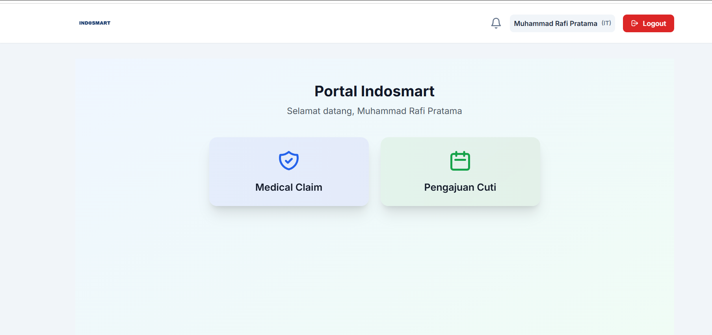
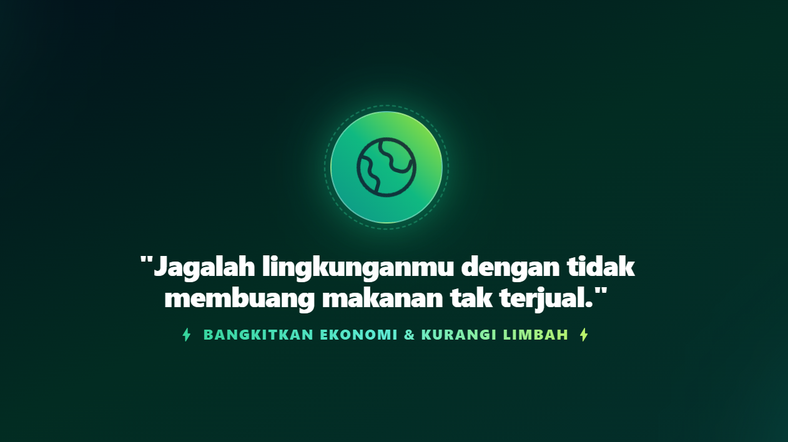

Front-end Development
Membuat interface yang responsif, interaktif, dan nyaman digunakan di berbagai perangkat.
HTML / CSS / JSAvailable for collaboration
Saya Gielang Omar Khadavi, junior web developer yang mengubah ide menjadi website dan sistem yang cepat, fungsional, dan mudah digunakan.
const developer = {
name: "Gielang Omar",
role: "Web Developer",
focus: ["Frontend", "Backend"],
status: "learning & building"
};01 / about me

Saya adalah mahasiswa Computer Science di Universitas Ary Ginanjar dan junior web developer.
Saya tertarik mengembangkan produk digital dari sisi front-end maupun back-end. Bagi saya, website yang baik bukan hanya terlihat menarik, tetapi juga memiliki struktur yang rapi, responsif, dan menyelesaikan kebutuhan penggunanya.
Hubungi saya02 / services
Membuat interface yang responsif, interaktif, dan nyaman digunakan di berbagai perangkat.
HTML / CSS / JSMembangun website dan aplikasi web dengan struktur yang rapi serta fokus pada kebutuhan pengguna.
FULL-STACKMengembangkan server-side logic, database, dan API agar sistem berjalan aman dan efisien.
PHP / NODE.JS03 / selected work
Beberapa sistem dan aplikasi yang saya kembangkan. URL demo dan gambar preview dapat ditambahkan pada setiap card.
Platform pembelajaran pemrograman dasar dengan materi interaktif untuk membantu pengguna memahami dunia coding.
Visit websiteSistem pengelolaan buku, peminjaman, dan laporan dengan dukungan pencetakan laporan dalam format PDF.
Visit websiteSistem digital untuk mengelola data siswa, kehadiran, profil, serta pembuatan laporan absensi.
Visit websiteAplikasi manajemen rumah sakit dengan struktur controller, model, routes, dan views untuk mengelola alur data aplikasi.
Visit website
Aplikasi berbasis Laravel untuk alur pengajuan medical claim dan cuti pada kebutuhan internal organisasi.
Visit website
Platform digital untuk membantu mengurangi food waste dengan mempertemukan penjual makanan surplus dan pembeli.
Lihat GitHub SaveBite04 / experience
Indosmart
Selama menjalani program magang sebagai Web Developer Intern di Indosmart, saya terlibat dalam proses pengembangan dan penyempurnaan aplikasi web internal, mulai dari membangun serta menyesuaikan tampilan antarmuka, mengembangkan fitur menggunakan teknologi web dan Laravel, membantu mengelola alur data aplikasi, membuat web pengajuan reimbursement, serta mengembangkan fitur pengajuan cuti dan slip gaji.
05 / education
Computer Science
Rekayasa Perangkat Lunak (RPL)
Pendidikan menengah pertama
Pendidikan dasar
06 / contact
Mari ngobrol dan buat sesuatu yang keren bersama.